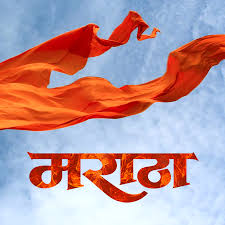

Maratha Empire
Maratha empire historical Indian empire
Home
Information
Contact
The Maratha empire was an early modern Indian empire that rose in the 17th century. It dominated much of the Indian subcontinent during the ...
The Maratha Empire was an Indian Empire that existed from 1674 to 1818 in the Indian history. The capital of the whole empire was Puna (Present Pune), and Raigad Fort was the nodal administration hub of the whole Maratha Empire at the initial stage.

Maratha caste
A caste in Maharashtra that includes the Kunbi subcaste of farmers
Made up of 96 clans that originated from peasant, shepherd, and other castes
Maratha region
The Marathi-speaking region that stretches from Mumbai to Goa along the west coast of India
Also extends inland about 100 miles east of Nagpur
Maratha Empire
A confederacy of semi-independent states that dominated much of the Indian subcontinent in the 18th century
Founded by the Maratha leader Shivaji in the 17th century
The empire's peak was in the mid-18th century
The empire was also known as the Maratha Confederacy
Maratha military
Known for their military prowess, including a powerful navy
Often hired mercenaries, including Portuguese naval officers
Maratha invasions
The Maratha invaded Bengal in 1742, but were repelled by Nawab Alivardi Khan